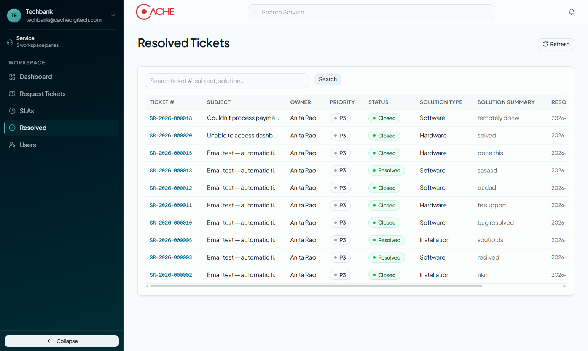
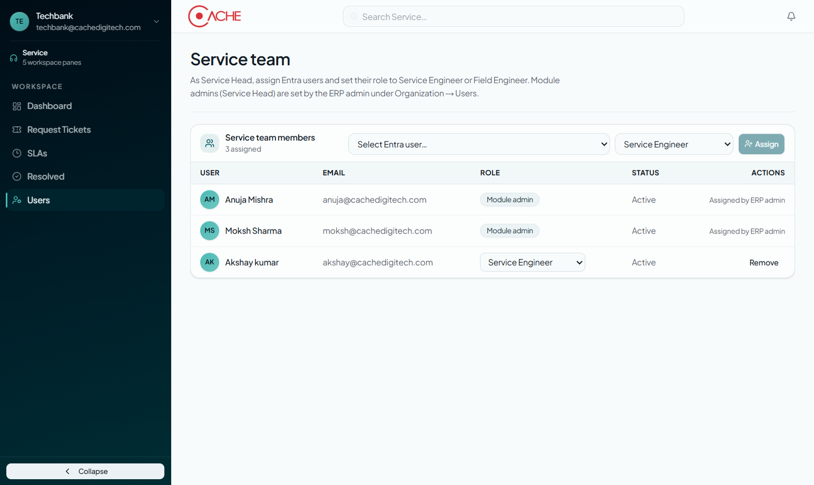
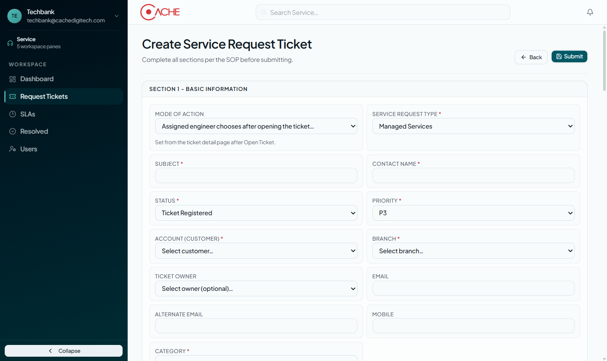
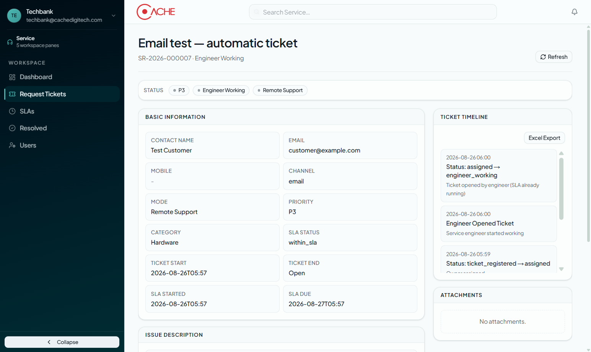
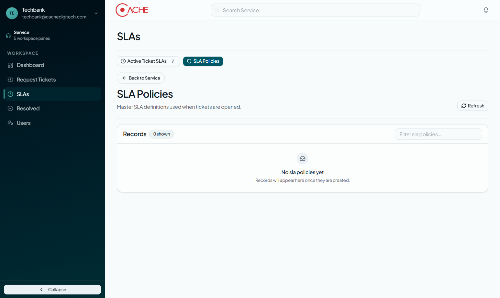
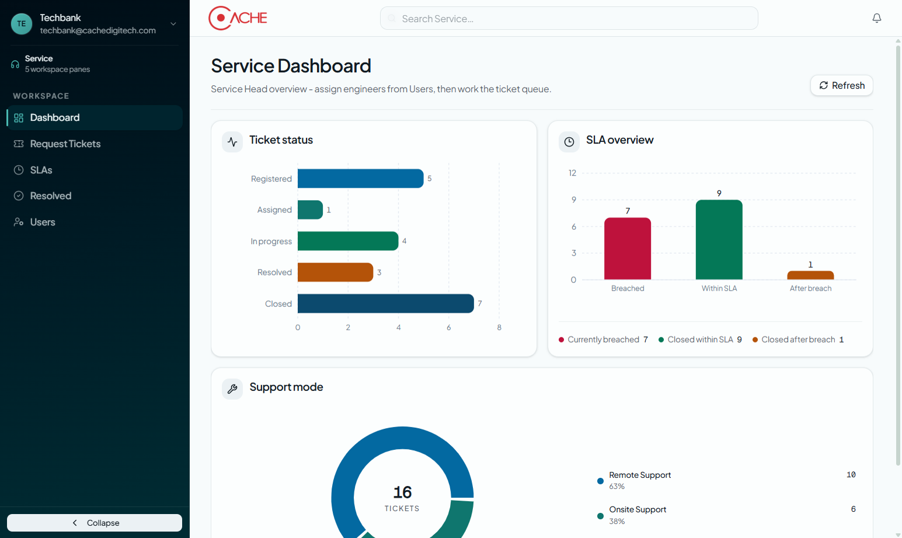
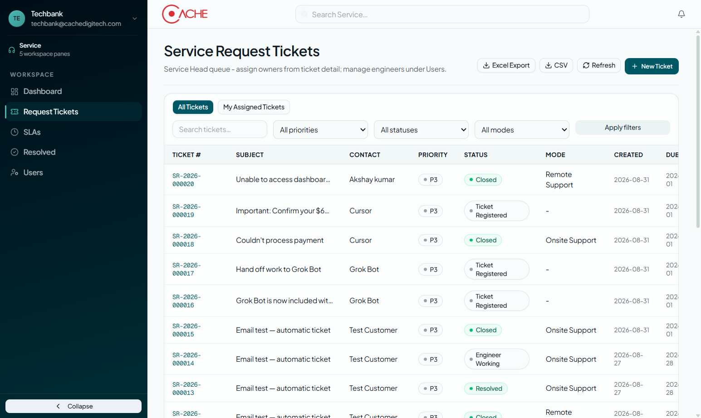
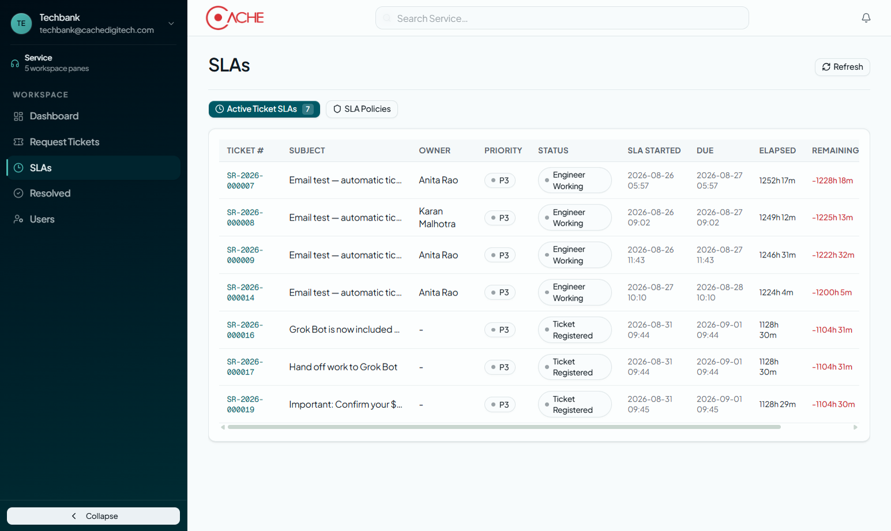
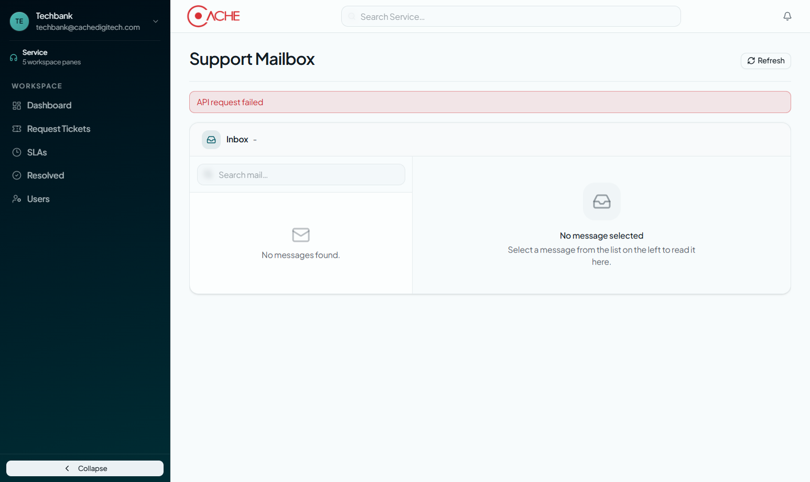

Service Module
User Manual
SOP service request tickets - Service Head assigns engineers; engineers work tickets, SLAs, and mailbox
Part A follows ticket lifecycle. Part B lists workspace panes.
Table of contents
- Who this manual is for and access
- End-to-end ticket path overview
- Part A - Process walkthrough (steps 01-09)
- Part B - Sidebar reference
- Roles and responsibilities
- Typical checkpoints
- Demo assets and rebuild
Who this manual is for and access
This manual is for Service Heads (module admins), Service Engineers, and Field Engineers who intake, assign, work, and close service request tickets under SLA.
- Open iConnect Plus and complete Entra sign-in.
- Open Service from the ERP module hub.
- Use the left sidebar: Dashboard, Request Tickets, SLAs, Resolved, Users (and Mailbox / Field Engineer when your role allows).
- Service Heads assign engineers on Users before routing tickets.
End-to-end ticket path overview
Part A walks New Ticket through assignment, engineer work, SLA monitoring, and resolved history.
Service request ticket path (demo walkthrough)
Part A - Process walkthrough
Follow these steps in order. Demo ticket used in screenshots:
- Ticket:
SR-2026-000007 - Subject: Email test - automatic ticket
- Status: Engineer Working
- Priority / Mode: P3 · Remote Support
- Contact: Test Customer
- Owner: Anita Rao
- Service Head: Techbank
Step 01 - Service Dashboard
Open Dashboard for ticket status mix, SLA breach vs within-SLA, and remote vs onsite support mode. Service Heads start here before working the queue.

Step 02 - Request Tickets queue
Use Request Tickets for the Service Head queue. Filter by priority, status, and mode. Toggle All Tickets vs My Assigned Tickets. Export Excel or CSV as needed.

Step 03 - Active Ticket SLAs
Open SLAs - Active Ticket SLAs to watch live clocks: started, due, elapsed, and remaining (negative remaining means breached).

Step 04 - Resolved Tickets
Review closed and resolved work on Resolved. Search by ticket #, subject, or solution summary. Columns include solution type and resolved date.

Step 05 - Service team Users
On Users, assign Entra users as Service Engineer or Field Engineer. Module admins (Service Head) are set by the ERP admin under Organization - Users.

Step 06 - Create New Ticket
Click + New Ticket and complete Section 1 Basic Information per SOP: subject, status, customer, contact, priority, branch, category, and request type. Mode of action is set later from ticket detail after Open Ticket.

Step 07 - Ticket detail and timeline
Open a ticket (demo: SR-2026-000007 - Email test - automatic ticket). Review basic info, issue description, assets, attachments, and the Ticket Timeline (Registered - Assigned - Engineer Working). Demo status: Engineer Working, Remote Support, P3.

Step 08 - Support Mailbox
Users with mailbox permissions open Mailbox to read inbound support mail that can become tickets. Configure mail credentials before the inbox populates.

Step 09 - SLA Policies
On SLAs, switch to SLA Policies for master definitions applied when tickets are opened. Create policies before high-volume intake.

Part B - Sidebar reference
Pane-by-pane glossary matching the Service left navigation. Mailbox is role-gated; Field Engineer is role-gated and not shown for Service Head-only sessions.
B.01 Dashboard
Service Head overview - status, SLA, support mode.

B.02 Request Tickets
SOP ticket queue and New Ticket.

B.03 SLAs
Active ticket SLA clocks and SLA Policies tab.

B.04 Resolved
Closed and resolved ticket history.

B.05 Users
Assign Service / Field Engineers from Entra.

B.06 Mailbox
Support inbox (shown when mailbox permission is granted).

Roles and responsibilities
Service Head / Module admin
- Assign engineers on Users
- Own SLA Policies and Dashboard
- Create tickets and assign owners
- Monitor breaches on Active SLAs
Service Engineer
- Work My Assigned Tickets
- Open ticket, set mode, update status
- Log solution and resolve / close
- Use Mailbox when granted
Field Engineer
- See Field Engineer workspace when assigned
- Work onsite visits and open tickets
- Update timeline and attachments
- Hand off to remote / OEM when needed
Typical checkpoints
Your tenant policies may vary. These are the usual Service checkpoints.
| Stage | Owner | Action in UI |
|---|---|---|
| Team setup | Service Head | Users - assign Service / Field Engineer |
| SLA master | Service Head | SLAs - SLA Policies |
| Intake | Service Head / Mailbox | New Ticket or convert from Mailbox |
| Assign | Service Head | Ticket detail - set Ticket Owner |
| Work | Engineer | Open Ticket - set Mode - update timeline |
| Close | Engineer / Head | Resolve - Closed; appears on Resolved |